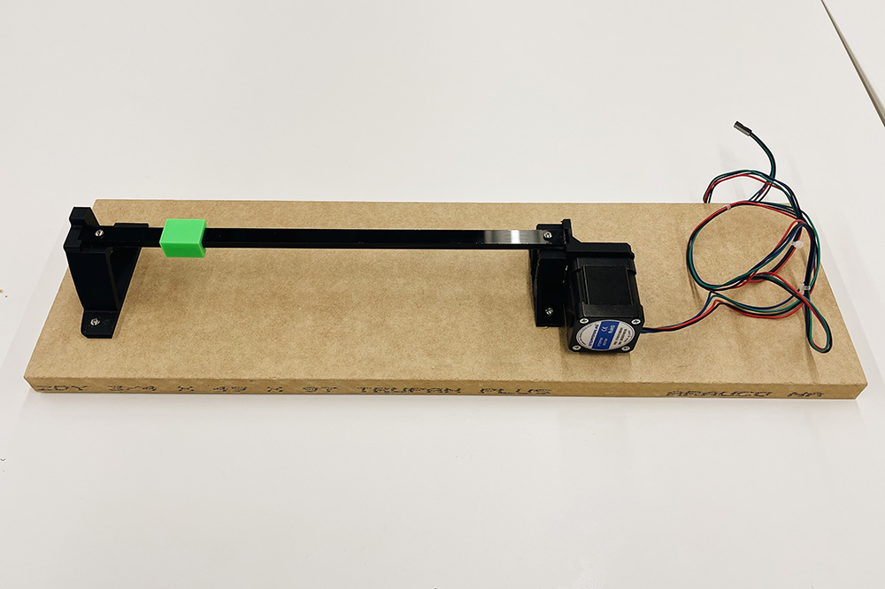
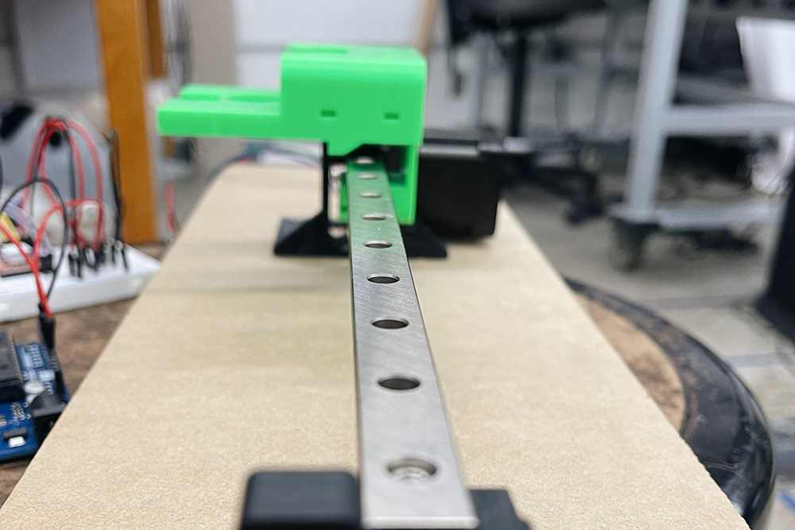
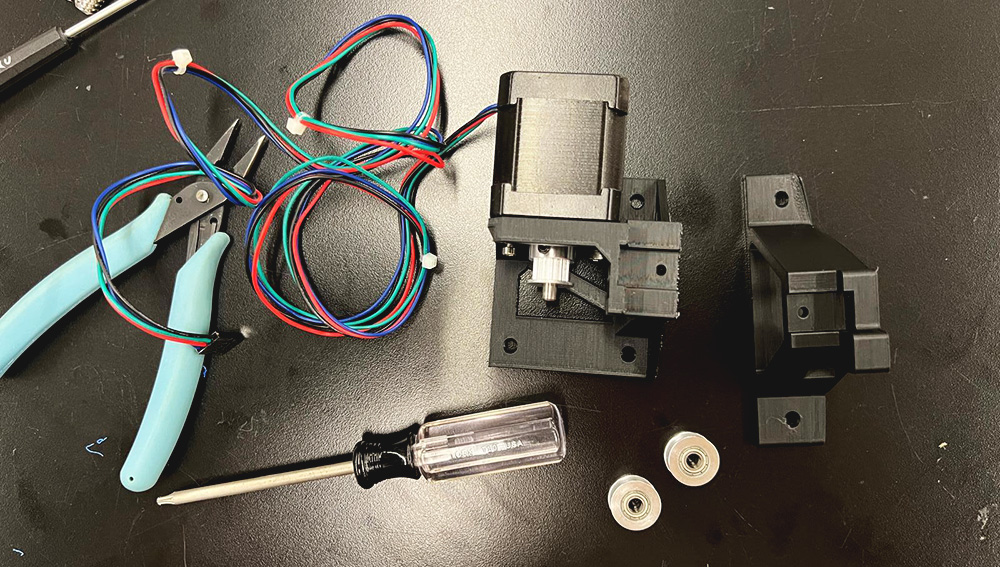
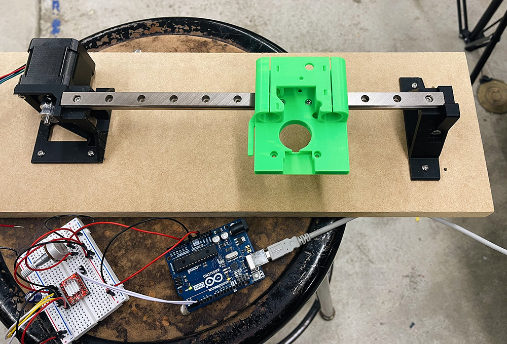

Welcome to my PS70 portfolio! Here you will find weekly progress of my digital fabrication journey.
10: machine building and end effectors
This week's assignment was to make a machine that includes at least one stepper motor and to demonstrate that the motor position is calibrated each time you turn it on. I collaborated with Rebecca Brand, since we used this brief as an opportunity to research and prototype a component of our final project, which will be a suminagashi (Japanese ink panting) machine. We decided to prototype the "x-axis arm" of our machine, which will eventually hold another motor-powered arm that will act as the "y-axis".
Stepper Motor
We started by playing with different stepper motors to understand how they work. Thinking it would be sufficient for our machine, we initially programmed the 28BYJ-48 stepper motor with a ULN2003 driver to move back and forth and built a rectangular frame using 2040 alumninium extrusions with an x and y axis.
However, we ended up finding a tutorial for building a CNC drawing machine that would become the inspirational framework for our project. Having initially thought we'd build a large rectangular frame similar to Suvin's machine, we found this approach to be more appropriate for our creative purposes. In this example, they use NEMA 17 bipolar stepper motors for more power.
We plan to drip ink into a bed of water and place a piece of paper over it. This armature structure of this solution would allow one to place and remove the paper more easily without the frame getting in the way, as would've been the case with the rectangular frame.

Building the arm
In order to get the x-axis arm working mechanically, we performed research and collected the requisite materials, including toothed pulleys, timing belt, linear railing, a NEMA 17 motor, an A4988 driver and heat shield, and a 12V port and power source. Initially, we laser cut and 3D-printed linear railing parts, but ended up getting the metal piece in the mail on time.

Laser cut acrylic railing + 3D printed block

300mm MGN12 linear rail guide with MGN12H block
We also 3D-printed two base ends - one idle and one that will house the motor - as well as a raft mount for the y-axis. Although we anticipate the raft mount dimensions changing, it was a helpful exercise in understanding how the mount will sit upon and be powered by the first stepper motor.

SOME 3D-PRINTED PARTS AND OTHER TOOLS

Bipolar Stepper Motor Setup
After constructing the arm and manually maneuvering the timing belt to ensure the setup actually functions, we set up the stepper motor circuit to validate it would work with the stepper motor as well. We also had to solder a 12V power source plug to the power and ground wires that would plug into the breadboard.

Adding the limit switch
Once we validated that the motor could move the mount properly, we soldered the limit switch to power and ground wires and affixed it to the right edge of the mount, where it would hit the base and trigger the direction change.
We adapted different Arduino code snippets online to program the mount. Every time it starts up, the motor spins clockwise and the mount moves to the right until it the limit switch is triggered; this brings the mount back to its "home" position or origin. After the limit switch is triggered, the motor then moves counterclockwise and the mount moves to the left. In upcoming weeks, we will program the motor to complete a suminagashi design before stopping.

SX-AXIS ARM SYSTEM AND ELECTRONIC PARTS.
ARDUINO CODE
#include "ezButton.h"
#include "AccelStepper.h"
// Define pin connections
const int dirPin = 2;
const int stepPin = 3;
// Define motor interface type
#define motorInterfaceType 1
#define DIRECTION_CCW 1
#define DIRECTION_CW -1
#define MAX_POSITION 0x7FFFFFFF // maximum of position we can set (long type)
ezButton limitSwitch(7); // create ezButton object that attach to pin A0;
AccelStepper stepper(motorInterfaceType, stepPin, dirPin);
int direction = DIRECTION_CW;
long targetPos = 0;
void setup() {
Serial.begin(9600);
limitSwitch.setDebounceTime(50); // set debounce time to 50 milliseconds
stepper.setMaxSpeed(1000); // set the maximum speed
stepper.setAcceleration(100); // set acceleration
stepper.setSpeed(300); // set initial speed
stepper.setCurrentPosition(0); // set position
targetPos = direction * MAX_POSITION;
stepper.moveTo(targetPos);
}
void loop() {
limitSwitch.loop(); // MUST call the loop() function first
if (limitSwitch.isPressed()) {
Serial.println(F("The limit switch: TOUCHED"));
direction *= -1; // change direction
Serial.print(F("The direction -> "));
if (direction == DIRECTION_CW)
Serial.println(F("CLOCKWISE"));
else
Serial.println(F("ANTI-CLOCKWISE"));
targetPos = direction * MAX_POSITION;
stepper.setCurrentPosition(0); // set position
stepper.moveTo(targetPos);
}
// without this part, the move will stop after reaching maximum position
if (stepper.distanceToGo() == 0) { // if motor moved to the maximum position
stepper.setCurrentPosition(0); // reset position to 0
stepper.moveTo(targetPos); // move the motor to maximum position again
}
stepper.run(); // MUST be called in loop() function
}